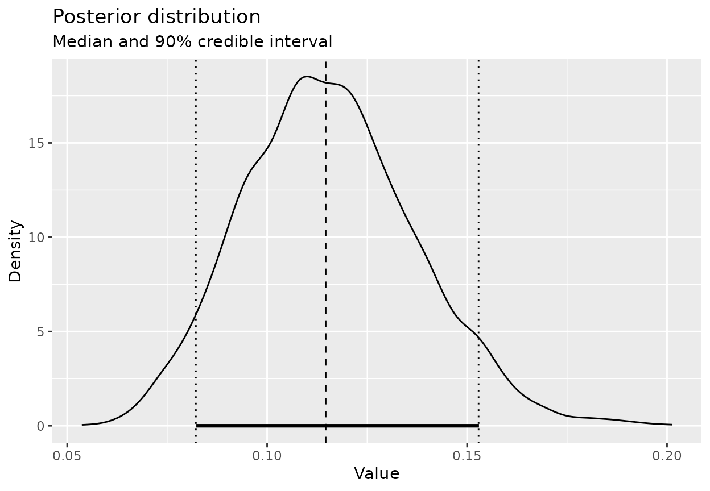
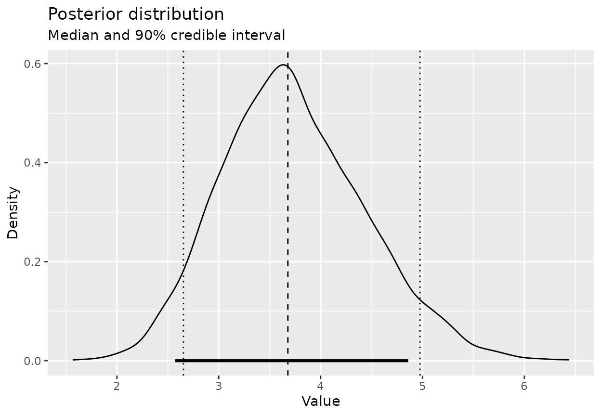
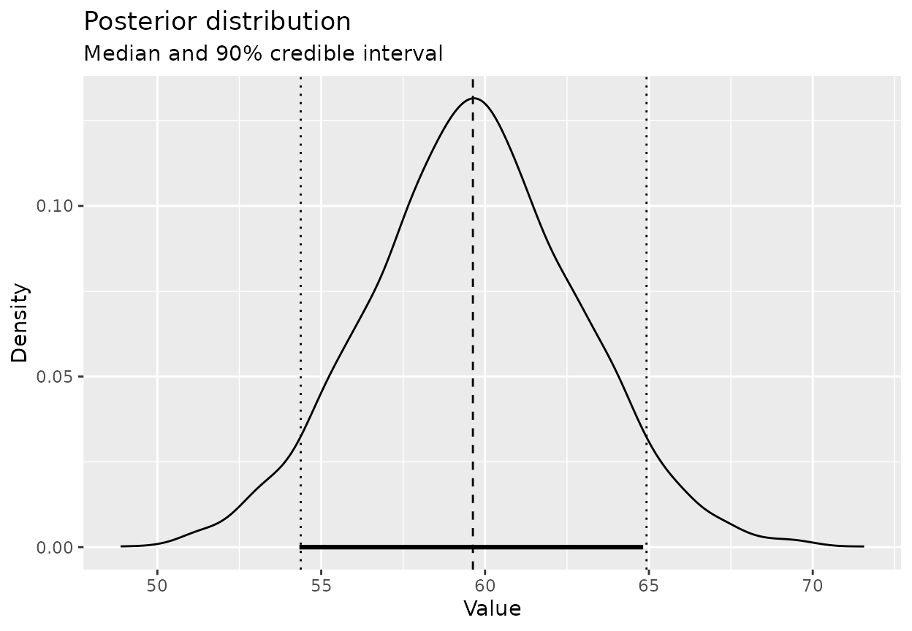

Conjugate updates with `fermi`: Beta–Binomial, Gamma–Poisson, and Normal–Normal
conjugate-updates.RmdIntroduction
The fermi package is built around two ideas:
- Fermi decompositions of hard problems into simpler parts.
- Bayesian updating of beliefs as data arrive.
This vignette focuses on the second part: conjugate updates using:
- beta_binom_posterior() – updating beliefs about a probability.
- gamma_poisson_posterior() – updating beliefs about a rate of counts.
- normal_normal_posterior() – updating beliefs about a mean with known noise.
Each section below explains:
- When to use the updating functions and why.
- How to express your prior with fermi and update it with data.
Each example picks a realistic question, encodes a prior based on
rough beliefs, updates with data, and inspects the posterior with
posterior_summary() and plot_posterior().
1. beta_binom_posterior(): learning a proportion
1.1 When and why
Use the Beta–Binomial model when:
- The unknown quantity is a probability (e.g. proportion of users who click a button).
- Your data are counts of successes out of a number of trials.
- Trials can be treated as independent with the same underlying probability.
Mathematically:
Prior:
Data:
Posterior:
The posterior has the same functional form as the prior. That’s what “conjugate” means here.
1.2 Example: Email signup rate on a website
Imagine a website with a “join newsletter” box.
We want to estimate the signup rate (the probability that a visitor signs up), and we want to combine:
- Prior belief (based on other, similar sites).
- Fresh data from the current site.
1.2.1 Prior: expert Beta distribution
Suppose you believe there’s an 80% chance that the signup rate is between 5% and 20%.
We can encode this as a Beta prior using
expert_beta_prior():
signup_prior <- expert_beta_prior(
q = c(0.05, 0.20), # quantiles
p = c(0.1, 0.9) # probabilities
)
signup_prior
#> fermi prior
#> Distribution: beta
#> Source : expert
#> Parameters :
#> $shape1
#> [1] 3.394814
#>
#> $shape2
#> [1] 25.12697
stats::qbeta(
c(0.1, 0.9),
shape1 = signup_prior$params$shape1,
shape2 = signup_prior$params$shape2
)
#> [1] 0.05000003 0.199999941.2.2 Data: observed signups
Now we run a short campaign and see:
- 200 visitors
- 23 signups
visitors <- 200
signups <- 231.2.3 Posterior: updated Beta using beta_binom_posterior()
signup_post <- beta_binom_posterior(
prior = signup_prior,
successes = signups,
trials = visitors
)
signup_post
#> fermi posterior
#> Distribution: beta
#> Parameters :
#> $shape1
#> [1] 26.39481
#>
#> $shape2
#> [1] 202.127
#>
#> Derived from prior (expert)We can summarise the posterior:
posterior_summary(signup_post, cred_level = 0.9)
#> Posterior summary
#> Credible level: 90 %
#> Median : 0.1142519
#> CI : [0.08241409, 0.152479]
#> HDI : [0.08090875, 0.1500094]And visualise it:
plot_posterior(signup_post, cred_level = 0.9)
Interpretation:
- The posterior median is your updated “best guess” for the signup rate.
- The credible interval quantifies uncertainty after seeing data and incorporating the prior.
- If you observe more data, the posterior will become more concentrated.
2. beta_gamma_posterior(): learning a rate of counts
2.1 When and why
Use the Gamma–Poisson model when:
- The unknown quantity is a rate of events per unit exposure (per day, per month, per person-year, etc.).
- Data are counts of events, often with an associated exposure (e.g. days observed, people at risk).
Mathematically:
- Prior:
- Data: , where is the exposure for observation .
- Posterior:
This is useful whenever you’re counting random events over time or space.
2.2 Example: Support tickets per day
Suppose you help manage a support team and want to understand the average number of tickets per day, .
You have some prior belief based on experience, and then you collect data from the first week on a new system.
2.2.1 Prior: Gamma for the ticket rate
Say you believe there’s an 80% chance that there are between 1 and 5 tickets per day.
tickets_prior <- expert_gamma_prior(
q = c(1, 5),
p = c(0.1, 0.9)
)
tickets_prior
#> fermi prior
#> Distribution: gamma
#> Source : expert
#> Parameters :
#> $shape
#> [1] 2.886175
#>
#> $rate
#> [1] 1.032756
stats::qgamma(
c(0.1, 0.9),
shape = tickets_prior$params$shape,
rate = tickets_prior$params$rate
)
#> [1] 1 52.2.2 Data: a week of counts
During the first 7 days, you observe the following counts of support tickets:
tickets_week <- c(3, 4, 2, 6, 5, 4, 3)
tickets_week
#> [1] 3 4 2 6 5 4 3Assume each day represents one unit of exposure. We could also pass a vector of exposures if days were of different length or reliability.
2.2.3 Posterior: updated Gamma using
gamma_poisson_posterior()
tickets_post <- gamma_poisson_posterior(
prior = tickets_prior,
y = tickets_week,
exposure = rep(1, length(tickets_week))
)
tickets_post
#> fermi posterior
#> Distribution: gamma
#> Parameters :
#> $shape
#> [1] 29.88618
#>
#> $rate
#> [1] 8.032756
#>
#> Derived from prior (expert)Summarise the rate (tickets per day):
posterior_summary(tickets_post, cred_level = 0.9)
#> Posterior summary
#> Credible level: 90 %
#> Median : 3.674416
#> CI : [2.63361, 4.926418]
#> HDI : [2.521482, 4.790498]We can also look at the implied distribution of tickets per day directly:
plot_posterior(tickets_post, cred_level = 0.9)
If you want to see the distribution of the expected tickets over a month (say 30 days), just transform the draws:
lambda_draws <- bf_draws(tickets_post, n = 4000)
tickets_month <- lambda_draws * 30
posterior_summary(tickets_month, cred_level = 0.89)
#> Posterior summary
#> Credible level: 89 %
#> Median : 110.7253
#> CI : [82.10701, 145.8198]
#> HDI : [82.08899, 145.8115]
plot_posterior(tickets_month, cred_level = 0.89)Interpretation:
- The Gamma–Poisson update smoothly blends your prior expectation with observed counts.
- As you accumulate more days of data, the posterior for the rate narrows.
3. normal_normal_posterior(): learning a mean with
known noise
3.1 When and why
Use the Normal–Normal model when:
- You care about an unknown mean .
- Individual observations are Normally distributed around that mean with a known standard deviation .
Mathematically:
- Prior:
- Data: with a known .
- Posterior: .
This is natural when measurement noise is well-understood, e.g. measurement devices with known precision or settings where variability is stable and well-estimated from past studies.
3.2 Example: Average response time
Suppose you’re tracking the average response time (in minutes) to a certain type of request.
From historical systems you think:
- The average response time is around 60 minutes.
- 90% of your prior belief is between 40 and 80 minutes.
You also believe that, for individual requests, the time is noisy with a standard deviation of about 15 minutes (due to variation in complexity, staff availability, etc.).
3.2.1 Prior: Normal for the mean response time
response_prior <- expert_normal_prior(
mean = 60,
lower = 40,
upper = 80,
level = 0.9
)
response_prior
#> fermi prior
#> Distribution: normal
#> Source : expert
#> Parameters :
#> $mean
#> [1] 60
#>
#> $sd
#> [1] 12.159143.2.3 Posterior: updated Normal using normal_normal_posterior()
response_post <- normal_normal_posterior(
prior = response_prior,
y = response_times,
obs_sd = obs_sd
)
response_post
#> fermi posterior
#> Distribution: normal
#> Parameters :
#> $mean
#> [1] 59.67475
#>
#> $sd
#> [1] 3.233339
#>
#> Derived from prior (expert)Summarise the posterior mean:
posterior_summary(response_post, cred_level = 0.9)
#> Posterior summary
#> Credible level: 90 %
#> Median : 59.73669
#> CI : [54.51551, 65.14882]
#> HDI : [54.64528, 65.23133]Visualise the posterior distribution for the mean response time:
plot_posterior(response_post, cred_level = 0.9)
Interpretation:
- The posterior mean moves from the prior mean (60 minutes) towards the sample mean.
- How far it moves depends on:
- The prior uncertainty (how wide the prior is).
- The number of observations and their variability.
- With more data, the posterior becomes increasingly dominated by the data.
4. Putting it into a Fermi-style context
The conjugate update functions in fermi are designed to
play nicely with how you’d approach Fermi estimation based on prior
knowledge and observed data. Conjugate helpers give you fast,
transparent updates: write down a defensible prior, add evidence, and
immediately see the revised belief. Swap in your own priors and data to
fit your domain.
A common workflow looks like this:
- Use
beta_binom_posterior(),gamma_poisson_posterior(), ornormal_normal_posterior()to update beliefs about individual components (probabilities, rates, or means). - Treat the resulting
bf_posteriorobjects as components in a Fermi-style decomposition withbf_fermi_simulate(). - Use
posterior_summary()andplot_posterior()on the combined result to understand uncertainty about a more complex quantity.
In this way, conjugate updates give you a data-informed starting point for Fermi estimations, while the Fermi simulation lets you combine multiple uncertain components into a final quantity of interest.
Summary
-
beta_binom_posterior()for learning a probability (e.g. signup rate) from counts of successes. -
gamma_poisson_posterior()for learning a rate (e.g. tickets per day) from counts over exposures. -
normal_normal_posterior()for learning a mean (e.g. average response time) when noise is approximately Normal with known standard deviation.
Each function takes a bf_prior and returns a
bf_posterior, which can be:
- summarised with
posterior_summary(), - visualised with
plot_posterior(), - or used as inputs to further Fermi-style simulations.
These are small, composable building blocks for Bayesian reasoning about real-world quantities.